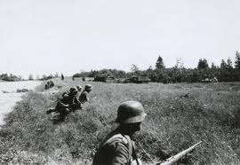

1940 посол ссср едет в берлин для переговоров и обдувания вступления ссср в ОСЬ
1941 в 4 часа утра без войны нациская германия напала на СССР и нарушула пакт о не нападении на друг друга
СССР начал проигровать рейх был под моской но не атакавал москву

1942-1943 тежёлые битвы в ссср опятьже рейх отобрал половину москвы но настала зима к которой рейх не готов м думал что сможет но...
1944 день-Д и ссср штурмует рейх воюет на 2 фронта ему нехватает всего солдаты отступали(солдаты рейха) внликобретания тоже наносит повреждения с повстанцами в франции большая новость для рейха.
Последний год войны=последняя статья и так 1945 ссср входить в берлин и забирает его половину ещё отбили франции рейх хотел капитулировать но гитлер против всего по поводу проиграша и вот ссср штурмует рейхстаг когда они зашли в рейхстаг гитлер сбежал веть тело ложное получаетса гитлер жив? на этом всё досвидания